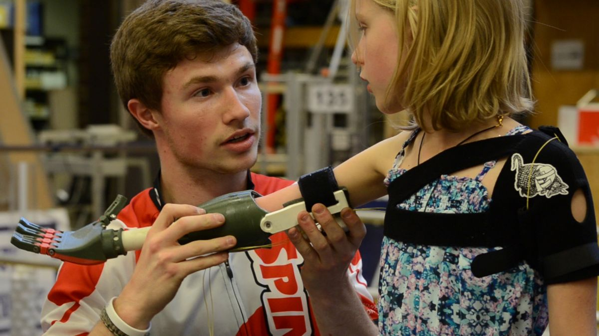

Preface
This page consists of school-based projects that I consider interesting enough to talk about. I've done many projects by this point, and most of them I can't remember because they weren't significant to my life.
Capstone Project
My Capstone project was called "PDF In-Broswer Rendering." For this project my team and I had to create a new way of rendering PDFs in a web browser quicker and lighter than the default way of doing so, which was through PDF.js. In the end, we decided to use API calls to load in new pages as you scrolled, so that you wouldn't have to wait for every page to load before viewing the frist few pages.
During this project, I was responsible for the frontend design, the hidden text-layer (which was used to allow text selection), page rendering, redactions, and a few other small things.
For the project we used ASP .NET, C#, JavaScript, and PDFiumSharp.
Kung Pow Furious
This was a semester long project that I made independently for a class. It's a side-scroller beat'em up where you play as a super hero duck. Your character can double jump and preform attack combos all in hand-drawn animation. Throughout This project I also utilized custom AI for projectile-firing enemies, and utilized shaders for interesting visual effects.
Since I had been doing Game Development for about 4-5 years in my freetime by this point, I asked the professor for one of my classes if I could spend my semester making this game instead of relearning the basics of Game Development. After we created a proposal with explicit requirements, I was released to make this game under the rule that I had to do 100% of the work in the game, including the art. It was a wonderful experience that allowed me to learn/develope a multitude of skills.
For the project I used GameMaker Studio 2, GML, and OpenGL.
Hand Of Grace
This was a project I did while on my FRIST Robotics Competition team in highschool. It involved designing and manufacturing a prosthetic arm for an elementary-schooler in our area. For my role, I was the Lead for our team's End Effector group. As such, I was designing fingers for this arm that would allow the elementary-schooler to grab things.